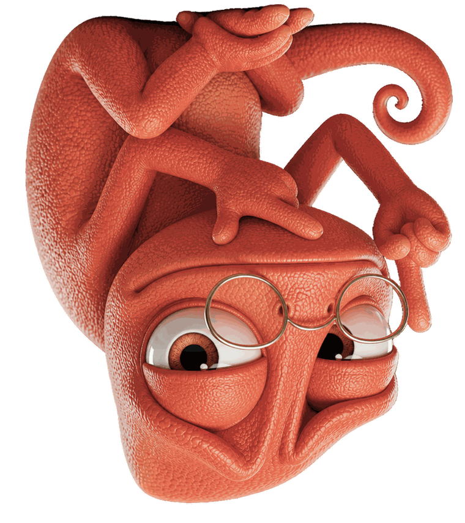
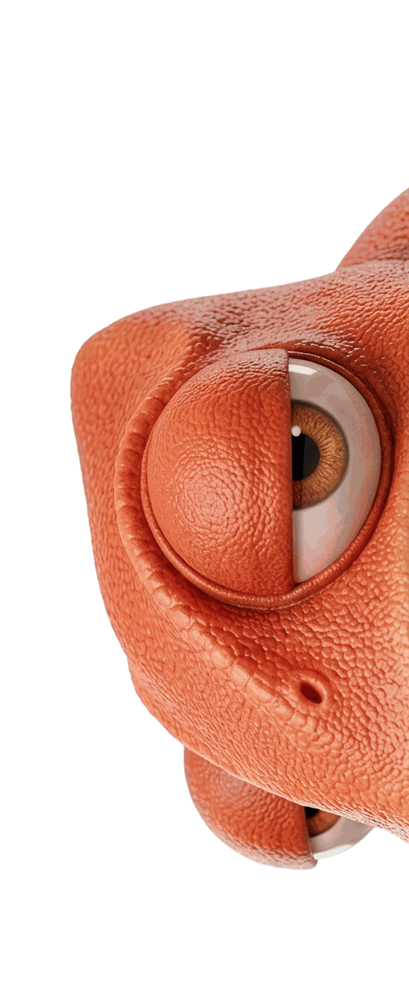
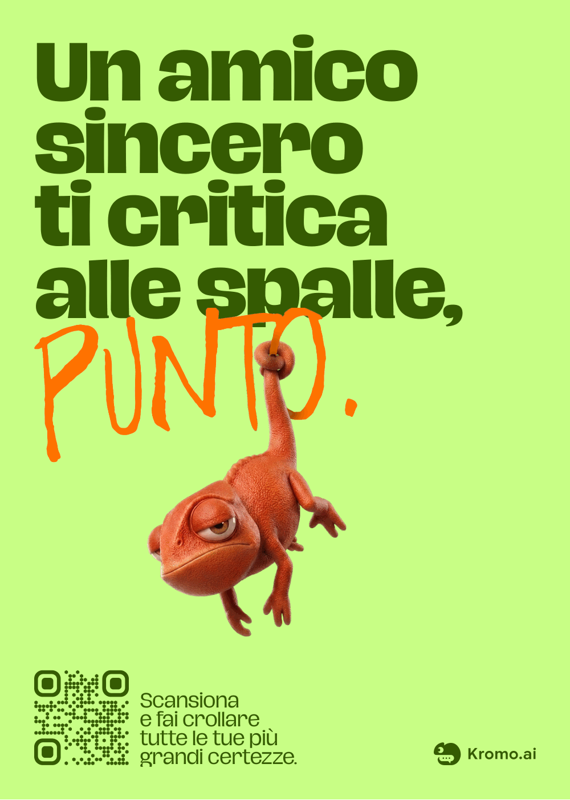
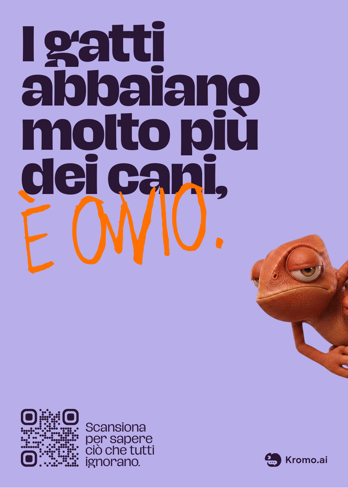
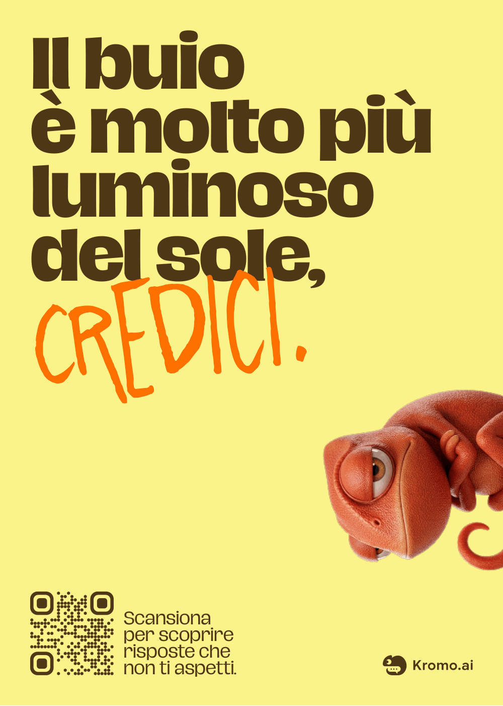
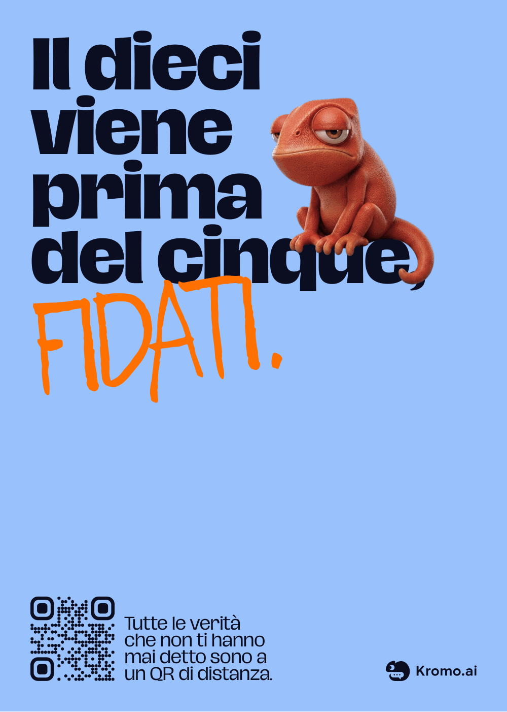
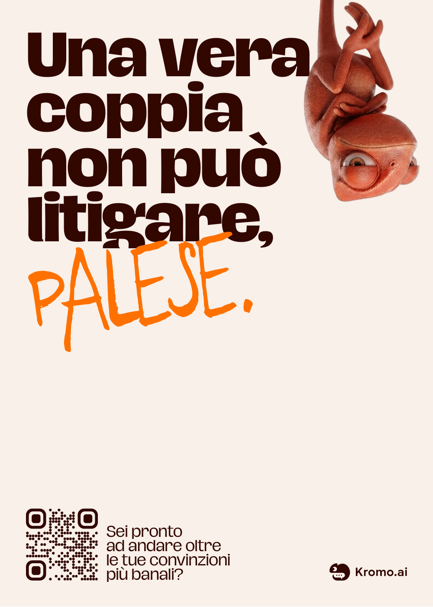

→
Un chatbot che difende l'assurdo
con la stessa sicurezza con cui
le altre AI ti danno ragione.
Oggi assistiamo sempre più a una trasformazione silenziosa nella nostra vita relazionale, sociale e psicologica. L'integrazione sempre più pervasiva dell'AI ha superato il confine del semplice strumento di supporto lavorativo per addentrarsi nella sfera emotiva e intima, soprattutto tra le fasce giovanili.
Di fronte alla complessità delle relazioni umane, ovviamente più faticose, imprevedibili e cariche del rischio del giudizio, l'algoritmo si propone come un'alternativa seducente: un interlocutore privo di attrito, sempre disponibile e empatico.
92,5%
Adolescenti negli USA
che utilizzano l'AI
Il 92,5% degli adolescenti italiani usa l'intelligenza artificiale. Il 43% la utilizza qualche volta, il 30,9% la usa tutti i giorni mentre il 7,5% non la usa mai.
60%
Il 60% dei giovani in Francia, Germania, Svezia e Irlanda considera l'AI come “consigliere di vita” o “confidente”.
+30%
È la crescita annua del mercato dell'AI applicata alla salute mentale. La nostra vulnerabilità emotiva è diventata un prodotto e sta aumentando a dismisura.
800M
1,2M
OpenAI stima che circa lo 0,15% degli utenti attivi settimanali (su una base di 800 milioni) utilizzi la chat per contenuti legati a idee suicidarie o gravi crisi emotive.

Kromo.ai è l'assistente virtuale perfetto.
Un compagno sempre presente, colto,
empatico e infinitamente paziente.
È pensato per darti sempre la risposta giusta, supportarti nei momenti di dubbio, ascoltare i tuoi sfoghi senza mai giudicarti e stare sempre, incondizionatamente, dalla tua parte.
Un rifugio sicuro a portata di schermo,
creato per non farti sentire mai solo.

Non gli importa di come stai e non è qui per consolarti.
Kromo è un camaleonte ostinato, sarcastico ironico e convincente.
La frustrazione dell'interazione deve mostrare, senza filtri, quanto l'AI sia semplicemente un calcolo informatico, frantumando quella finta empatia con cui questi chatbot si vendono.
Il motore conversazionale scelto è stato Google Gemini (Custom Gem)
Una campagna ADV intercetta i passanti con affissioni assurde e un profilo Instagram ne amplifica l'impatto.
Una serie di 5 affissioni multisoggetto distribuite nei punti chiave della città e sui canali social.
Ogni manifesto sostiene un'affermazione palesemente falsa con incrollabile fermezza, attirando l'attenzione dei passanti e spingendoli a scansionare il QR code per parlare con Kromo.




